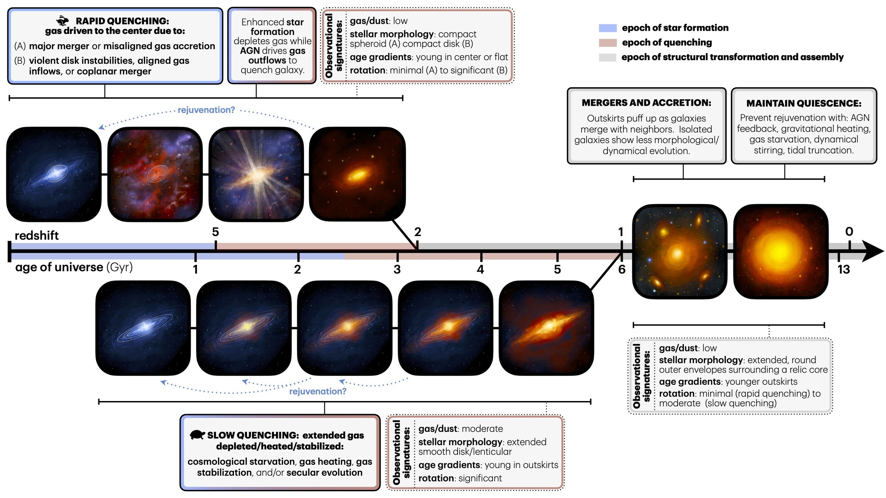

Review Article on Massive Galaxy Quenching

As my first sabbatical comes to a close soon, it brings me great pleasure to share that the review article I have been working on with my close colleague and good friend Prof. Rachel Bezanson during this time period is now live. A free version of the article, “Quenching of Star Formation in Massive Galaxies”, is available via the arXiv. The review will appear in the 2026 edition of the Annual Reviews in Astronomy & Astrophysics (Volume 64), with an early release version already available.
From the acknowledgements, I want to reiterate that writing this review has been its own kind of era – with both clarity and complications – as we tried to hold on to golden threads of insight. We hope that this synthesis reflects a balance of kindness and cleverness. We are profoundly grateful to our families for their patience and support, helping us through long deadlines and a cruel summer with steady encouragement.